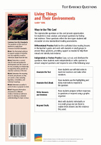

Related Resources
Text-Dependent Comprehension
Scaffolded Reading and Comprehension
Related Titles
Online Resources
Lexile® 820L
Living Things and
Their Environments
Content Focus
Essential Question
Supporting Questions
Enduring Understanding
ELA Strategies and Skills
Text-Dependent Comprehension
Vocabulary
Writing to Sources
What Makes This Text Complex? | |
Purpose and Levels ➌ | The purpose of this text is to describe how living things interact with their environments. (pp. 3–6)* |
Structure ➌ | The text includes multiple text structures including explanatory text, cause and effect, compare and contrast, and sequence of events/steps in a process text. (p. 7)* |
Language Conventionality ➌ | Text includes both simple and complex sentence structures. Domain-specific and academic vocabulary words are supported throughout (p. 8)* |
Knowledge Demands ➌ | Basic knowledge of Earth, Life, and Physical Science is required. |
Qualitative text complexity dimensions from the CCSS are scored on the following scale:
➊—Low; ➋—Middle Low; ➌—Middle High; ➍—High
*Citations refer to pages within this teacher’s guide that address the specific text complexity.
LEXILE® is a trademark of MetaMetrics, Inc., and is registered in the United States and abroad.
Common Core Standards © Copyright 2010. National Governors Association Center for Best Practice and Council of Chief State School Officers. All rights reserved.
© Benchmark Education Company, LLC. All rights reserved. Teachers may photocopy the reproducible pages for classroom use. No other part of the guide may be reproduced or transmitted in whole or in part in any form or by any means, electronic or mechanical, including photocopy, recording, or any information storage or retrieval system, without permission in writing from the publisher.
Objectives
Informational Text
Life Science
Ecology
Support for English Learners
Support students to access the text by orally introducing academic vocabulary, language, and concepts
Scaffold the Reading
Scaffolded Preview
Introduction
Pages 4–5. What would you need for a trip into space? Keep in mind that unlike Earth, space does not provide what humans need to survive.
Support for Struggling Readers
Support students to access complex text by having them first read the PRIME Bridges edition.
First Read
Living Things and Their Environments Teacher’s Guide
Introduce the Text SL.6.1b, SL.6.1c
Preview and Make Predictions
Invite students to flip through the book and view photos, or project the whiteboard version of the text and preview the pages together.
Have students turn to the Table of Contents and read the chapter heads and supporting questions for each chapter.
Invite students to read the book description and the About the Author blurb on the back cover.
Ask: How do these features help you figure out what you’ll learn about in this book?
Collaborative Whole-Group Discussion
Ask: What do you know about living things and their environments?
If your students need more support, use the Scaffolded Preview provided for each section.
Have students turn to pages 4–5, or display the pages on the whiteboard. Read aloud the text, or listen and follow along with the talking e-book in the whiteboard edition.
Invite students to quickly generate a list of questions they have about living things and their environments.
Choose the reading option that best meets the needs of your students.
For students who need more support with comprehension, consider scaffolding them into the on-level text using the PRIME Bridges Edition.
© Benchmark Education Company, LLC
Read Chapter 1 RI.6.2, RST.6.2, SL.6.1
Set a Purpose
If necessary, use the Scaffolded Preview and Cognates for Essential Vocabulary to help students access the text.
Read aloud the supporting question on page 6: How does the environment affect living things?
Say: As you read this chapter, you will use a strategy called Cluster Notes to help you “cluster” information about living things and their environments.
Display the Cluster Notes sample shown in the right margin.
Say: Cluster Notes are a way to organize information as you read. You’ll write the main concept of the chapter in the center circle and jot notes about the subtopics in the surrounding circles. The supporting facts and details for each subtopic will be written in the ring of circles surrounding it. Cluster Notes will help you group and link information.
Read aloud page 8 and model how you jot key information using the Cluster Notes organizer.
Have students create a Cluster Notes organizer on notebook paper, or distribute copies of BLM 1.
Instruct students to read page 7 and write the chapter’s main concept in the center circle. As they read, have them jot down the subtopics in the surrounding circles. Explain that students may use whatever concise note-taking method helps them capture the information easily and accurately (single words, phrases, abbreviations, symbols, drawings, etc.).
Summarize Key Concepts: Think and Write Together
Invite students to share their Cluster Notes. What key concepts did they write in the center circle? What subtopics did they note in the surrounding circles? How do the notes they recorded around each subtopic connect to it? Allow time for students to share and discuss their findings with the class and summarize what they learned.
As a group, construct a two- to three-sentence written summary of the key ideas in the chapter. If students need more support to summarize the text, explicitly model strategies for summarizing.
Model Summarizing
Say: When we summarize, we include only the most important information in a text. We look for the central ideas. We don’t include all of the details. Let’s summarize a section of this chapter together.
Reread page 12.
Say: This section is about niches. I ask myself, “What is the central idea the author wants me to understand about niches?”
Allow responses. Support students to recognize that the author wants them to understand that each species has a unique strategy for survival, or niche. To help students visualize this idea, the author provides specific examples of animals and their niches.
Say: In my summary, I will include only the central idea. I will not include examples of specific animals’ niches.
|
A niche is a species’ unique strategy for survival. A living thing’s shape, abilities, and behavior help it succeed in its niche. All living things in a habitat share the same set of resources, but each species has a different niche, enabling them to survive. |
Sample Summary (Chapter 1)
© Benchmark Education Company, LLC
Living Things and Their Environments Teacher’s Guide
all water on Earth
atmosphere
air and gases that surround Earth
hydrosphere
Sample Cluster Notes Chart
Support for English Learners
Scaffolded Preview
Chapter 1
Page 7. What are Earth’s four major spheres? We’ll find out in this chapter.
Page 8. We’ll read how ecosystems can range in size, from a single rotting tree to Earth’s biosphere.
Page 11. We’ll learn the difference between abiotic (nonliving) and biotic (living) factors and how they affect living things.
Cognates (English/Spanish) for Essential Vocabulary
biosphere/la biosfera (page 7)
biotic factor/el factor biótico
(page 11)
community/la comunidad (page 8)
ecology/la ecología (page 8)
ecosystem/el ecosistema (page 8)
habitat/ el hábitat (page 10)
niche/el nicho (page 12)
population/la población (page 10)
Earth’s Spheres
lithosphere
land and solid rock on Earth’s crust
biosphere
all living things on Earth
Support for English Learners
Sentence Frames to Support Collaborative Conversation
Based on my notes, I know _____.
Based on my notes, the chapter’s central idea is _____.
An important concept from this chapter is _____.
Support for Struggling Readers
Support students to access complex text by having them first read the PRIME Bridges edition.
Living Things and Their Environments Teacher’s Guide
© Benchmark Education Company, LLC
Read Chapter 2 RI.6.2, RST.6.2
Set a Purpose
If necessary, use the Scaffolded Preview and Cognates for Essential Vocabulary to help students access the text.
Read aloud the supporting question on page 16: What paths do food and energy follow in an ecosystem?
Say: As you read this chapter, continue using Cluster Notes to organize and link information about paths that food and energy follow in an ecosystem. Then we’ll collaborate to summarize the main ideas and details.
Have students create a Cluster Notes organizer on notebook paper, or distribute copies of BLM 1.
Review the note-taking process as needed.
Choose the reading option that best meets the needs of your students.
Summarize Key Concepts: Think/Pair/Write/Share
Invite students to share their Cluster Notes with a partner and agree on the key ideas in the chapter. Explain that partners should collaborate to write their own two- to three-sentence summaries of the key information in the chapter.
Use the Sentence Frames to Support Collaborative Conversation for English learners.
Support students to reread their notes and/or the chapter and to differentiate between the writer’s key ideas and the supporting details she uses.
Review the definition of a summary.
Say: Remember, a summary is a short statement of the most important information in a text.
Bring students together and ask several pairs of students to share their summaries. As a whole group, evaluate the summaries and identify any key information that was omitted. As needed, clarify students’ understanding of the supporting question.
As a group, construct a written summary of the key ideas in the chapter.
|
All living things require energy from the sun. Autotrophs, or producers, are living things that use the sun’s energy and basic chemicals to make their own food. Consumers are living things that can’t produce their own food. They get energy by eating producers or other consumers. There are different kinds of consumers: herbivores (plant eaters), carnivores (meat eaters), omnivores (eat plants and animals), and decomposers (eat waste). Energy moves from producers up to different levels of consumers through food chains that make up food webs in an ecosystem. Energy decreases with each transfer from producer to consumer. |
Sample Summary (Chapter 2)
© Benchmark Education Company, LLC
Living Things and Their Environments Teacher’s Guide
Support for English Learners
Scaffolded Preview
Chapter 2
Pages 18. Look at the photos. We’ll read that decomposers are consumers that eat dead animals, like the ones shown here.
Page 21. We’ll learn that ecosystems contain many food chains that combine to create food webs.
Pages 24. Look at the diagram. We’ll read how biomass decreases as it moves through the food chain from producers to carnivores.
Cognates (English/Spanish) for Essential Vocabulary
carnivore/el carnívoro (page 18)
consumer/el consumador, la consumadora (page 18)
herbivore/el herbívoro (page 18)
omnivore/el omnívoro (page 18)
producer/el productor, la productora (page 16)
Sentence Frames to Support Collaborative Conversation
Many scientists think that the dinosaurs died out because _____.
Sunlight is important to living things because_____.
Based on my notes, the chapter’s central idea is _____.
Support for English Learners
Scaffolded Preview
Chapter 3
Pages 28 & 29. Look at the diagrams. We’ll learn how chemicals are renewed through natural cycles.
Pages 30 and 31. We’ll do an experiment and make rain.
Chapter 4
Page 36. We’ll find out what it takes for a species to survive, and why others die out.
Page 39. Look at the photo. We’ll read how short-term changes affect an ecosystem.
Conclusion
Page 43. We’ll read about Biosphere 2, an artificial environment where scientists are working to create an environment that can sustain life in space.
Cognates (English/Spanish) for Essential Vocabulary
consumer/el consumador, la consumadora (page 27)
niche/el nicho (page 36)
producer/el productor, la productora (page 27)
Sentence Frames to Support Collaborative Conversation
Based on my notes, the central ideas for these chapters are _____ and _____.
Cycles of nature, such as the nitrogen and water cycles, are important because _____.
When different populations of the same species are exposed to different environments, they often _____.
Examples of events that can cause short term changes to an ecosystem include _____.
First Read
Living Things and Their Environments Teacher’s Guide
Read Chapter 3, Chapter 4, and Conclusion RI.6.2, RST.6.2
Set a Purpose
If necessary, use the Scaffolded Preview and Cognates for Essential Vocabulary to help students access the text.
Read aloud the supporting questions on pages 26 and 34: How do ecosystems recycle important chemicals? How do ecosystems change over time?
Set a purpose for the first read.
Say: As you read these chapters, continue using Cluster Notes to focus on how ecosystems recycle important chemicals and how they change over time. Then we’ll collaborate to summarize the main ideas and details.
Have students create a Cluster Notes organizer on notebook paper, or distribute copies of BLM 1.
Review the note-taking process as needed.
Choose the reading option that best meets the needs of your students.
Summarize Key Concepts: Think and Write Independently
Give students a few moments to review their Cluster Notes and to write their own two- to three-sentence summaries of the key information in these chapters.
Use the Sentence Frames to Support Collaborative Conversation for English learners.
Bring students together, and ask several volunteers to read their summaries aloud. As a whole group, evaluate the summaries and identify any key information that was omitted. As needed, clarify students’ understanding of the supporting questions.
As a group, construct written summaries of the key ideas in the chapters.
Reread the summaries that your class has collaborated to write.
|
The environment supplies everything living things need to survive, including carbon dioxide, nitrogen, water, and oxygen. These chemicals are always available because they are constantly renewed through natural cycles. The cycles enable life to continue on Earth without using up its vital resources. |
Sample Summary (Chapter 3)
|
In an ecosystem, organisms struggle to survive and reproduce. Organisms of the same species compete with each other. As ecosystems change, populations within a community change, too. Organisms that are not able to survive die and are no longer part of the population. Events outside of the ecosystem, such as storms or insect invasions, sometimes result in dramatic changes to the ecosystem, but living communities bounce back quickly. Ecosystems can also shift gradually from one type to another. |
Sample Summary (Chapter 4/Conclusion)
© Benchmark Education Company, LLC
Close Reading Option 1: Identify and Describe Sequence of Events/Steps in a Process RI.6.5, RST.6.5
Model Finding Text Evidence
Display and read aloud the close reading question.
|
To help readers understand the sequence of events in nature’s cycles, the author uses a sequential text structure. What evidence in the text help you identify sequence of events? |
Explain that the question asks the reader to use evidence in the text to identify sequence
of events.
Say: To identify sequence of events in a text, I look for certain words and evidence that signal chronology or sequential order.
Reread page 28 as students follow along.
Say: The author describes the sequence of events in the nitrogen cycle. The letters in this example are evidence to the order of events, and certain words also signal sequence such as next.
Support Practice
Ask students to turn to page 29.
Collaborative conversation (turn and talk). Ask students to turn to a partner and reread the page.
Ask: What are the steps in the water cycle? What evidence helped you identify the sequence of events?
Bring students together and invite pairs to share the sequence of events they found and the evidence that helped them identify it. Agree upon the key idea of the sequence of events.
Find Text Evidence Independently
Ask students to reread page 32 to identify the sequence of steps in the oxygen–carbon dioxide cycle. Students should look for evidence, record their findings, and identify a new understanding based on the sequence of events.
Confer with individual students to support their independent close reading. Encourage them to explain how identifying sequence of events contributes to their understanding of living things and their environments.
© Benchmark Education Company, LLC
Living Things and Their Environments Teacher’s Guide
Close Reading and Analysis
|
Order/Sequence |
Events/ |
|
1. |
Bacteria in soil convert nitrogen to compounds that plants can use. |
|
2. |
Next, plants use nitrogen to build proteins and grow their bodies. |
|
3. |
Some plant material is eaten by animals. |
|
4. |
The proteins in the plants are recycled into animal proteins; animal wastes and dead plants and animals fall to ground. |
|
5. |
Decomposers break down animal wastes, dead plants and animals to simpler compounds. |
|
6. |
Fixed nitrogen is now available for new plants. Other bacteria take part in the nitrogen cycle, returning nitrogen to the atmosphere. |
Sample Graphic Organizer
Close Reading Options
Support students to dig deeper into the text. Choose one or more of these close reading options, or choose an alternate focus that addresses students’ needs.
Routine for Finding Text Evidence
Living Things and Their Environments Teacher’s Guide
Close Reading Option 2: Ask Questions to Determine Word Meaning RI.6.4, RST.6.4
Model Finding Text Evidence
Display and read aloud the close reading question.
|
What questions can help a reader understand the meaning of the term ecosystems on page 8? |
Explain that the question asks the reader to ask questions of the text that can help define the term.
Say: This text uses words and phrases specific to living things and their environments. Sometimes a direct definition or context clues don’t provide enough information to thoroughly understand the meaning of a word. One way to figure out the meaning of an unknown word is to ask questions about it. We’re going to read closely and ask questions to figure out the meaning of unknown words. Knowing how to do this will help us read many kinds of complex texts.
Reread the section “What is an Ecosystem?” on page 8. Highlight the term ecosystems in the first sentence.
Say: The author describes an ecosystem as consisting of “all the living and nonliving things in one area that interact with each other.” She also explains that ecosystems can be “big or small.” This explanation doesn’t tell me what an ecosystem is. If I knew of an example of an ecosystem, I might understand better what one is. So, I ask myself, “What is an example of an ecosystem?” As I read on, the author gives examples of both a small ecosystem: a single, rotting tree stump—and a very large one: Earth. Now I understand what ecosystems are and how they can differ in size and type.
Support Practice
Display and highlight the term population on page 10.
Say: Let’s reread the text where this word appears, and ask questions to help us figure out the meaning.
Collaborative conversation (turn and talk). Say: Turn to a partner. Reread the second paragraph and write a question that can help you define the term population. Then read the paragraph again to see if the author answers the question. Write down a definition of population to share with the class.
Bring students together and ask several pairs to read aloud the questions they asked and the answers they found. Check the glossary to confirm the definition.
Close Read Independently
Ask students to close read the first paragraph on page 18 and write a question that can help them define the word consumers. Students should write down their definitions and check them against a dictionary definition. Confer with individual students to support their independent close reading.
© Benchmark Education Company, LLC
Close Reading Option 3: Use Text Evidence to Draw Inferences RI.6.1, RST.6.1
Model Finding Text Evidence
Display and read aloud the close reading question.
|
We wouldn’t survive without the atmosphere. What evidence from the text directly supports this inference? |
Explain that the question asks the reader to find evidence in the text that supports a specific inference.
Say: I’m going to show you how I make inferences when I read. When we infer, we use information from the text to form an understanding that is not directly stated in the text. To make an inference, I need to read the text very closely and think about what the author is explaining. I also need to support the inference I make with evidence from the text to make sure that my inference makes sense.
Reread the second paragraph on page 8 while students follow along.
Say: The author explains that the atmosphere filters out dangerous radiation from the sun as well as provides oxygen, nitrogen, and carbon dioxide, all of which are essential for living things. Although the author does not state it directly, this evidence allows us to infer that without the atmosphere we wouldn’t survive.
Display a blank graphic organizer like the one in the margin. Write in the inference; then ask students to recall supporting evidence from the text.
Complete the graphic organizer.
Support Practice
Read aloud the second paragraph on page 10 as students follow along. Display a blank graphic organizer like the sample in the margin.
Collaborative conversation (turn and talk). Say: Think about what you read about communities and populations. Using evidence from the text, make an inference about the number of populations that can exist in a community. Talk to your partner, and complete a graphic organizer.
Find Text Evidence Independently
Ask students to reread page 27. Have them use evidence from the text to draw and support an inference about the requirements of living things.
Ask: How did making inferences as you read help your understanding of the concepts?
© Benchmark Education Company, LLC
Living Things and Their Environments Teacher’s Guide
|
Text Evidence |
|
atmosphere filters out dangerous radiation from the sun (p. 8) |
|
atmosphere provides elements essential to the survival of living things: oxygen, nitrogen, carbon dioxide (p.8) |
|
Inference |
|
We could not survive without the atmosphere. |
Sample Draw Inferences Graphic Organizer
Living Things and Their Environments Teacher’s Guide
Close Reading Option 4: Answer Text Evidence Questions RI.6.1, RI.6.2, RI.6.4, RST.6.1
Draw and Support Inferences
Display and read aloud the close reading question.
|
What evidence from the text supports the inference that consumers depend on producers for oxygen? |
Text Evidence: “Consumers and producers take oxygen out of the air, but producers also put enough oxygen for themselves and consumers into the air.” (p. 27) RI.6.1
Identify and Determine Central Idea and Key Details
Display and read aloud the close reading question.
|
Find text evidence to support the claim that animals, plants, and their nonliving environments are all connected. |
Text Evidence: “Water carries nutrients throughout the bodies of living things and helps them get rid of wastes. Fish, seaweed, whales, and many other organisms spend their whole lives in the water. The atmosphere filters out dangerous radiation from the sun. It also provides the oxygen, nitrogen, and carbon dioxide essential to the survival of living things. Plants and bacteria use the minerals in Earth’s crust to grow and reproduce. Animals then get the minerals they need to grow by eating plants or other animals.”
(p. 8) RI.6.2
Determine Word Meaning
Display and read aloud the close reading questions.
|
How is the term niche used in this book? What context clues help the reader understand the meaning of the term? |
Definition: the survival strategy of a species of living thing
Text Evidence: “a unique strategy for survival” (p. 12) RI.6.4
© Benchmark Education Company, LLC
Build Language and Vocabulary
L.6.1
Extend Language Concepts: Dependent Clauses
Read the following sentence from page 8:
“If the ecosystem is a pond, the community includes all the birds, fish, insects, and plants that interact in the pond.”
Say: There are many examples of dependent clauses in this book. A dependent clause is a part of a sentence that has a subject and a verb but is not a complete sentence. Dependent clauses begin with signal words such as if in this example. Other signal words include but are not limited to after, although, as, because, before, since, unless, until, whether, when, and while.
Have students work in pairs to look through the book for additional examples of dependent clauses. Ask students to share their findings. Monitor and provide feedback as necessary. Record the dependent clauses on a chart to refer to throughout the rest of the unit.
Turn and talk. Challenge partners to compose other oral sentences with dependent clauses based on information in the text. Have partners share their sentences with the rest of the class and explain how the dependent clauses affect their sentences.
Extend Language Concepts: Quantitative Adjectives
Read the following sentences from page 8:
“Each ecosystem consists of all the living and nonliving things in one area that interact with each other.”
Say: An adjective is a word that describes something. A quantitative adjective is an adjective that describes a quantity. It indicates how many or how few. In this example, there are several quantitative adjectives: each, all, and one. They tell how many. Other quantitative adjectives include some, many, much, and every.
Read the following sentence from page 22:
“Cold or very dry places produce little vegetation.”
Say: The word little in this sentence is a quantitative adjective. Remember that a quantitative adjective describes a quantity or amount. This word describes the amount of vegetation, which is little.
Have students work in pairs to find more examples of quantitative adjectives. Have them list the sentences in which the adjective is used. As students share their findings, record them on chart paper under the title “Examples of Quantitative Adjectives.”
© Benchmark Education Company, LLC
Living Things and Their Environments Teacher’s Guide
Extend Meaning
Examples of Dependent Clauses
Page 27. “While some processes use up important substances, other processes create them anew.”
Page 36. “There are so many species of living things because there are so many niches in nature.”
Page 40. “After hundreds of years, the damaged ecosystem blends in with the surrounding area."
Page 43. “When carbon dioxide levels inside the dome rose, it affected the species living in the coral reef community.”
Examples of Quantitative Adjectives
Page 4. “Too much carbon dioxide is poisonous.”
Page 22. “Those ecosystems have fewer consumers and simpler food webs.”
Page 27. “Some bacteria put nitrogen into the soil.”
Page 29. “Every particle of water has passed through the water cycle many times in the history of Earth.”
Interactive Activities
Independent Learning
Answer Key
Living Things and Their Environments Teacher’s Guide
Interactive Activities
Visit BenchmarkEducation.com for additional interactive personal learning activities.
Text Evidence
Question Card
Reading, Writing, Speaking, and Listening RI.6.1, RI.6.2, RI.6.4, RI.6.6, W.6.1, W.6.2, W.6.3, W.6.4, W.6.5, W.6.6, W.6.7, W.6.8, W.6.9, RST.6.7, RST.6.8
Practice Finding Text Evidence
Have students work independently or with a partner to answer questions that require them to find evidence in the text using the Text Evidence Question Card for this book.
Writing to Sources
Use one of the text-dependent writing prompts below, or create one of your own, to give students the opportunity to demonstrate their understanding of the concepts covered in the text. Rubrics to help you evaluate students’ writing are available in the Digital Teacher’s Guide (BenchmarkUniverse.com).
Argument prompt. Write a clear, well-organized speech arguing against human activities that negatively affect the atmosphere, such as burning fossil fuels and clearing forests. Provide facts from the text to support your argument, including the role the atmosphere plays in our survival. Make sure that your essay has a clear introduction and concluding section.
Informative/explanatory prompt. Select one of the cycles of nature described in this book. Then using a sequence text structure, describe the process. Use sequence signal words in your explanation.
Narrative prompt. Look at the photo on pages 34-35. Imagine you were one of the bighorn rams, but it is now a few years later, and you are showing this photo to your baby lamb. Describe to your lamb why this fight, or competition, was so important both for your survival and for your lamb’s.
Collaborative Research
Have students collaborate to complete the research project outlined on the inside back cover of the text. Use the research project as a context in which to support students’ online research skills and to strengthen students’ presentation skills by requiring them to present their findings formally.
Closed-Book Content Assessment
You may wish to have students complete a formal content assessment available in this guide (BLMs 2 and 3) and online. This assessment helps you evaluate students’ understanding of the standards-based concepts developed in the text. More information about the question types and an answer key are also available online. An answer key is provided on page 13 of this guide.
© Benchmark Education Company, LLC
1. biosphere
2. Sample answers: Biotic: weasel, hawk, mouse, grass, fleas, etc.; Abiotic: weather, air, soil, sunlight, etc.
3. Plants are the primary producers on land, occupying the niche most similar to the tiny ocean organisms at the vents.
4. consumers
5. sun
6. Sample answer: The pure carnivore that eats only meat might depend on a plant-eating animal for its food supply. If that animal depends on a plant that in turn depends on bees for pollination, the disappearance of bees could affect the carnivore indirectly.
7. nitrogen, water, oxygen, carbon dioxide
8. Answers may vary. Sample answers: Short-term: fast-growing weeds and grasses grow in where forest used to be. Long-term: A different type of forest arises as it eventually grows back.
9. Answers may vary but should be logical and make some connection to a relatively greater number of available niches or abundance of resources, or age/stability of the system that allowed time for greater diversity to develop.
10. Answers may vary. Students may include short-term natural disasters such as fires, storms, insect population explosions, volcanic eruptions, etc., as well as long-term events such as temperature changes (global warming), human factors such as strip mining, pollution, destruction of forests, and so on.
Explanations should cite logical reasons why or how the chosen events affect an ecosystem.
Content Assessment
© Benchmark Education Company, LLC
Living Things and Their Environments Teacher’s Guide
Cluster Notes Guide
Directions: Write the main topic of the chapter in the center circle. Write subtopics in the circles around the main topic. Use the outer circles for facts and details that support each subtopic.
(Add or cross out circles as needed to organize key information in the chapter.)
Living Things and Their Environments:
Content Assessment
Directions: Use what you have learned about living things and their environments to answer the following questions.
Chapter 1
biosphere
Plants are the primary producers on land, occupying the niche most similar to the tiny ocean organisms at the vents.
Chapter 2
consumers
su
Sample answer: The pure carnivore that eats only meat might depend on a plant-eating animal for its food supply. If that animal depends on a plant that in turn depends on bees for pollination, the disappearance of bees could affect the carnivore indirectly.
Chapters 3 and 4
nitrogen, water, oxygen, carbon dioxide
Answers may vary. Short-term: fast-growing weeds and grasses grow in where forest used to be. Long-term: A different type of forest arises as it eventually grows back.
Answers may vary but should be logical and make some connection to a relatively greater number of available niches or abundance of resources, or age/stability of the system that allowed time for greater diversity to develop.
producers
herbivores
carnivores
BLM 3